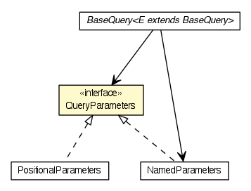

JavaScript is disabled on your browser.
Skip navigation links
Overview
Package
Class
Use
Tree
Deprecated
Index
Help
Prev Class
Next Class
Frames
No Frames
All Classes
Summary:
Nested |
Field |
Constr |
Method
Detail:
Field |
Constr |
Method
org.dayatang.domain
Interface QueryParameters

All Known Implementing Classes:
NamedParameters
,
PositionalParameters
public interface
QueryParameters
查询参数集接口。有两种形式的查询参数集：定位参数集和命名参数集，分别由ArrayParameters 和MapParameters两个实现类实现。
Author:
yyang
Skip navigation links
Overview
Package
Class
Use
Tree
Deprecated
Index
Help
Prev Class
Next Class
Frames
No Frames
All Classes
Summary:
Nested |
Field |
Constr |
Method
Detail:
Field |
Constr |
Method
Copyright © 2015
Dayatang Open Source.
. All rights reserved.